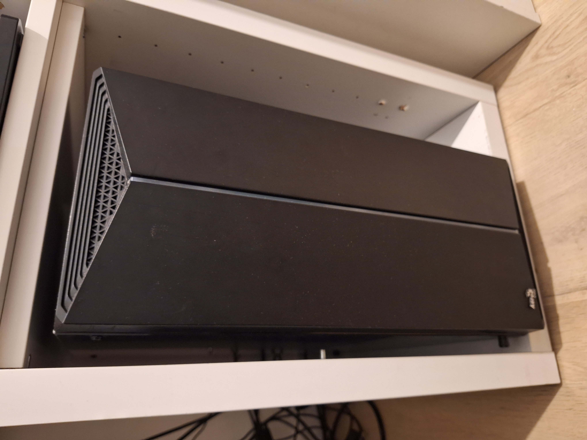
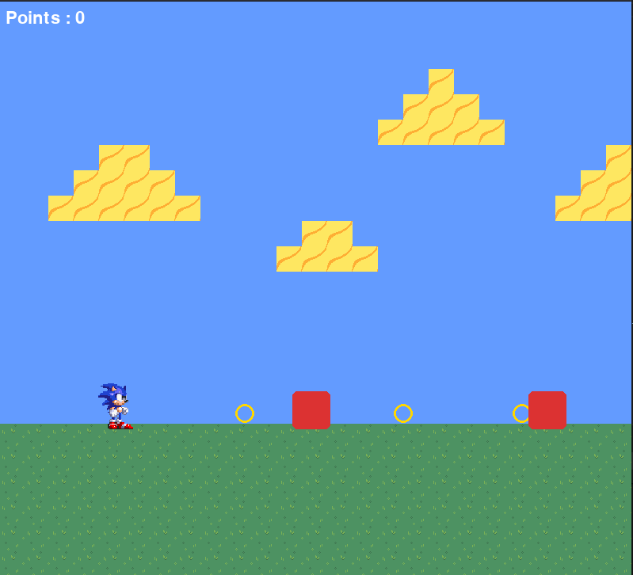

03
Les activités
réalisées
réalisées

Compétition
Hackathon
Développement en équipe sous pression, gestion du temps et livraison d'un projet complet en conditions réelles.

Pédagogie
Tutorat Néerlandais
Transmission de savoirs, patience et communication — des compétences essentielles en milieu professionnel.

Hardware
Démontage & Assemblage PC
Connaissance du matériel informatique, diagnostic de composants et compréhension de l'architecture physique d'un système.

Infrastructure
Atelier Réseau
Configuration, topologie et protocoles réseaux — une base solide pour le développement d'applications distribuées et le DevOps.

Infrastructure
Serveur NAS · TrueNAS
Montage d'un serveur NAS personnel — TrueNAS, accès distant WireGuard, Wake on LAN et gestion du stockage.

Entrepreneuriat
Création d'entreprise & Idéation
Business model, étude de marché, génération d'idées et premières démarches entrepreneuriales — pensée produit appliquée.

3D · Création
Blender — Potion 3D
Modélisation, matériaux et rendu d'un objet 3D détaillé. Introduction à la pensée spatiale et aux outils de création numérique.

3D · Animation
Blender — Tasse animée
Animation d'un objet avec remplissage simulé — physique des fluides, keyframes et rendu d'une scène animée complète.

pc-avantHardware
Upgrade PC · Build personnalisé
Achat d'un PC d'occasion et upgrade complet — nouvelle carte mère, CPU, RAM et GPU. Recherche de compatibilité, montage et installation.

Game Dev
Jeux Python · Pygame
Développement de jeux 2D avec Pygame — boucle de jeu, gestion des événements, collisions et rendu graphique temps réel.